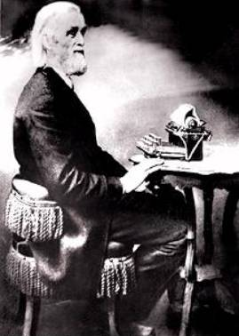

The Dvorak Simplified Keyboard Layout
Aaron Toponce
Best viewed with a standards-complaiant browser (not IE).
Presentation Overview
- The importance of typing.
- A history of the QWERTY Layout.
- The immergence of the Dvorak Layout.
- Benefits of typing with the Dvorak Layout.
- Data analysis of Dvorak vs. QWERTY.
- Sofware and hardware to start typing in Dvorak.
Typing Importance
- Word Processing
- Instant Messaging
- Surfing the Internet
- Programming
- A Random Arrangement of Keys
Christopher Latham Sholes
- Typewriter patent in 1868.
- Alphabetically arranged keys on 2 rows.
- Poor hardware implementation.
- Quick typing jammed keys.
- The wrong approach (rearrange vs hardware).
Momentum Builds

- Carlos Glidden and James Densmore.
- Moving frequently jammed keys.
- Digraphs, "th", "at", "ly", etc.
- Completely random placement.
- RUMOR: The word "TYPEWRITER" exists on the top row to aid sales.
- The Sholes Layout, aka: QWERTY, was born.
Myth Debunked
- MYTH: Sholes rearranged the keys from alphabetic order to QWERTY to slow down typing speed demons.
- FACT: The typewriter had not yet been introduced to the public.
- FACT: QWERTY was developed before public release.
- http://www.maxmon.com/1874ad.htm
Production Begins
- Sholes sold all rights to Densmore.
- Densmore went to Remington.
- In 1873, the 'Sholes and Glidden Typewriter' was released.
- Sold only 5,000 machines from 1873 to 1878.
- Version 2.0 was released selling 100,000 sold by 1900.
- Sholes tried changing the layout to something more logical.
QWERTY Becomes Standard
- Billions of typwriters and keyboards since 1873.
- Random arrangement of keys the typing standard.
- Touch typing with all 10 fingers.
- 30 years later, someone decided to make a change.
- Right when QWERTY became obsolete, it was widely used and distributed.
Dr. August Dvorak
- Distant relative of composer Antonin Dvorak.
- Education Psychologist and professor of education at the University of Washington, Seattle.
- In 1932, Dr. Dvorak set out to change the layout based on logic and research.
- Funded by the Carnegie Foundation.
- Resarched letters, digraphs and words, and studied actual typists.
The Dvorak Simplified Layout
Logical Reasoning
- Focus on the "Home Row" (70% of typing).
- Developed to improve typing efficiency.
- Stronger fingers vs weaker fingers.
- Reaching up versus reaching down.
- 88% of the U.S. population is right-handed.
Some Observations
- All vowels under the left hand.
- Most used consonants under the right hand.
- More commonly used consonants on the upper row.
- Least used consonants on the bottom row.
More Observations
- The QWERTY homerow hiccups.
- 31% of QWERTY / 70% of Dvorak.
- Alternating hands.
- aaron@hercules:~ wc -l /usr/share/dict/words
- 98569 words
- aaron@hercules:~ grep -ci '^[aoeuidhtns]$' /usr/share/dict/words
- 1970
- aaron@hercules:~ grep -ci '^[asdfghjkl]$' /usr/share/dict/words
- 154
[slide title]
[any material that should appear in print but not on the slide]